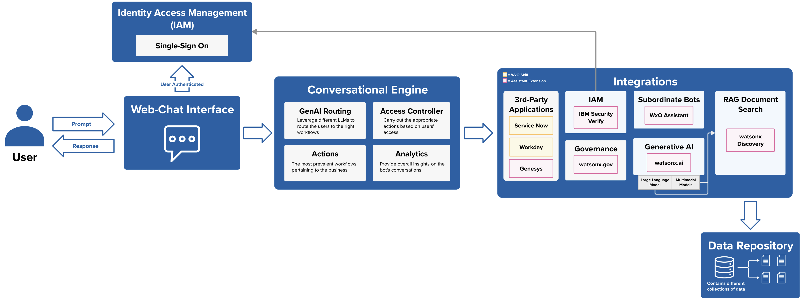

Overview
The objective of this solution is to demonstrate a chatbot which has the ability to orchestrate conversations to the appropriate channels and/or 3rd-party applications while leveraging generative AI technologies. This unified agent solution revolves around six key capabilities:
Core Products: watsonx Orchestrate, IBM Cloud Object Storage
| Capability | IBM Product |
|---|---|
| Identity Access Management | IBM Security Verify |
| Generative AI-Driven Conversational Routing | watsonx.gov or watsonx.ai Watson Matchine Learning |
| RAG Document Search | watsonx Discovery watsonx.ai Watson Machine Learning |
| 3rd-Party Application Integrations | watsonx Orchestrate |
| Governance | watsonx.gov |
| Subordinate Bot Integration | watsonx Orchestrate Assistant |

Solution Components
Web-Chat Interface
- Leveraging IBM Cloud Object Storage to host a static website for the chatbot.
- Configuration Steps here
Identity and Access Management (IAM)
IAM can be carried out in one of two methods:
- Security Verify SSO
- Simulation
IBM Security Verify SSO
Leverage the IBM Security Verify API to carry differnt actions like authenticating user logins and resetting passwords within the Assistant builder UI.
Simulation
Simulating user login within watsonx Orchestrate Assistant Builder can be achieved by storing simulated individuals in a data structure. This data structure, typically a list or map, can store information about each simulated user, such as their name, access level, and other relevant details. By initializing this data structure with a set of simulated users, you can create a realistic login scenario where the system checks user credentials and grants or denies access accordingly.
Storing simulated individuals in a data structure within watsonx Orchestrate Assistant Builder allows you to test the login functionality and ensure that the system behaves as expected. This can help identify potential issues early in the development process, saving time and resources. Additionally, you can customize the simulated users’ data to represent different user types, enabling you to test the system’s access control mechanisms and ensure that users are only granted access to the appropriate actions and data.
By using simulated users in this manner, you can thoroughly test the user login functionality and ensure that the unified agent with generative AI capabilities is secure, reliable, and user-friendly.
Conversational Engine
The conversational engine was built using watsonx Orchestrate Assistant Builder where generative AI-driven routing was configured to direct users to the most appropriate workflows and data based on their access permissions.
GenAI Routing
Configuration Steps here
Integrations
RAG Document Search
RAG Document Search can be carried out in one of two methods:
1. watsonx Discovery:
This pattern consists of creating an integration with watsonx Discovery. watsonx Discovery leverage a vectorDB to store data corpus’s embeddings to enable RAG.
Required Integrations:
- watsonx Discovery
- watsonx.ai
2. watson Discovery:
This pattern consists of creating two integrations with watson Discovery and watsonx.ai. Watson Discovery is used to store and carry out searches on data collections.
Required Integrations:
- watson Discovery
- watsonx.ai
Governance
Governance is exemplified in two key ways:
- watsonx.gov: IBM’s enterprise governance platform for monitoring key metrics associated with LLMs
- RAG Source Attribution Links
watsonx.gov

In summary, the implementation of IBM® watsonx.governance™ provides a comprehensive and seamless solution for the development, evaluation, deployment, and monitoring of AI models, ensuring compliance, transparency, and optimal performance throughout the AI lifecycle.
Required Integrations:
- watsonx.gov
RAG Source Links
For every user query that involves RAG Document Search, a source link will be provided with each response to ensure transparency by clearly indicating the data corpus from which the answer was derived.
3rd-Party Applications
Subordinate Bot
- Leverage native assistant builder extensions to integrate with other watsonx Assistants
- Configuration Steps here
Data Repository
- Leverage Cloud Object Storage to store documents relevant to the use case